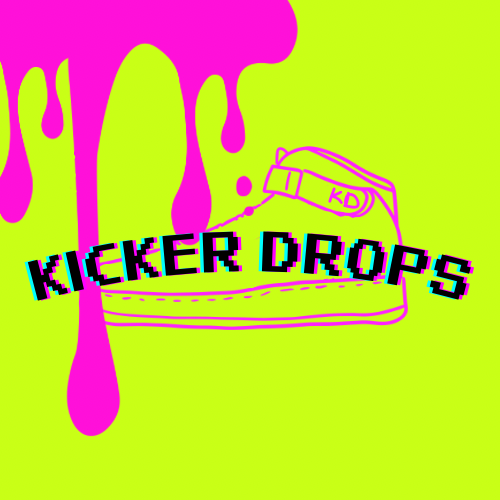

本文へ移動

KICKER DROPS
PAINT YOUR OWN.
目次
KIT GUIDE
スニーカーペイント体験キットガイド
動画と各章の解説を表示するには、ブラウザのJavaScriptを有効にしてください。
付属している道具の説明
下処理編
マスキングテープ編
筆ペイント編
スプラッタペイント編
コーティング編
卸サイト ― 他のデザインに挑戦したい方へ
KICKER DROPS 卸専門店（新しいタブで開きます）